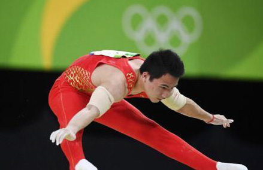
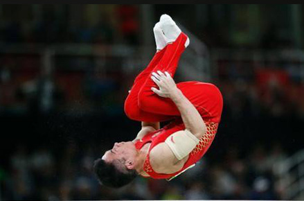

随身队医：邓书弟失误很意外 双杠夺金概率七成
邓书弟的健康和体能目前都保持最佳状态，为他激战里约奥运提供了重要保障
在之后的双杠单项比拼中，夺金的概率在七成。”中国体操男队队员邓书弟的队医陈
思君在贵阳接受中新网记者采访时如是说。。
北京时间8月9日凌晨3时，2016年里约奥运会体操男团决赛展开了激烈较量，
中国队最终以总分271.122获得铜牌。记者在邓书弟家乡贵阳，与聚集在清镇
体操训练馆邓书弟的队友们组成的庞大后援团，观看直播，透过荧屏为其助威。


在首轮自由操比赛中，邓书弟出现了失误，且在随后的几项比赛中，邓书弟每做完一套动作
，场下队医都会为其做康复按摩。“邓书弟是不是因伤病而影响他的发挥?”观看直播
的小师弟们担忧道。
“邓书弟一直保持很好的健康和体能，目前处在巅峰状态。”贵州省体操男团队医、邓书弟随身医生的陈思君回应说，邓书弟失误“很意外”，可能是他首次出战奥运，有些紧张，肌肉
绷得太紧，而没完全放开。
由于体操项目具有难、新、力、美、稳的特征，运动员受伤较频繁。全能王、双单杠冠军邓书
弟的健康问题从而一直是大家最为关心的问题。“书弟生态体质强，目前身体状况非常好，到现
在没受过什么大伤，在运动员里面算是比较幸运的。”陈思君说。